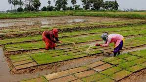

Organic Farming

Organic farming is an agricultural system that uses fertilizers of organic origin such as compost
manure, green manure, and bone meal and places emphasis on techniques such as crop rotation and
companion planting. It originated early in the 20th century in reaction to rapidly changing farming
practices. Certified organic agriculture accounts for 70 million hectares globally, with over half
of that total in Australia.[1] Organic farming continues to be developed by various organizations
today. Biological pest control, mixed cropping and the fostering of insect predators are encouraged.
Organic standards are designed to allow the use of naturally-occurring substances while prohibiting
or strictly limiting synthetic substances.[2] For instance, naturally-occurring pesticides such as
pyrethrin are permitted, while synthetic fertilizers and pesticides are generally prohibited.
Synthetic substances that are allowed include, for example, copper sulfate, elemental sulfur and
Ivermectin. Genetically modified organisms, nanomaterials, human sewage sludge, plant growth
regulators, hormones, and antibiotic use in livestock husbandry are prohibited.[3][4] Organic
farming advocates claim advantages in sustainability,[5][6] openness, self-sufficiency, autonomy and
independence,[6] health, food security, and food safety.
History
Agriculture was practiced for thousands of years without the use of artificial chemicals. Artificial
fertilizers were first developed during the mid-19th century. These early fertilizers were cheap,
powerful, and easy to transport in bulk. Similar advances occurred in chemical pesticides in the
1940s, leading to the decade being referred to as the 'pesticide era'.[16] These new agricultural
techniques, while beneficial in the short-term, had serious longer-term side-effects such as soil
compaction, erosion, and declines in overall soil fertility, along with health concerns about toxic
chemicals entering the food supply.[17]: 10 In the late 1800s and early 1900s, soil biology
scientists began to seek ways to remedy these side effects while still maintaining higher
production.
In 1921 the founder and pioneer of the organic movement Albert Howard and his wife Gabrielle
Howard,[18][19][20] accomplished botanists, founded an Institute of Plant Industry to improve
traditional farming methods in India. Among other things, they brought improved implements and
improved animal husbandry methods from their scientific training; then by incorporating aspects of
Indian traditional methods, developed protocols for the rotation of crops, erosion prevention
techniques, and the systematic use of composts and manures.[21] Stimulated by these experiences of
traditional farming, when Albert Howard returned to Britain in the early 1930s[22] he began to
promulgate a system of organic agriculture.